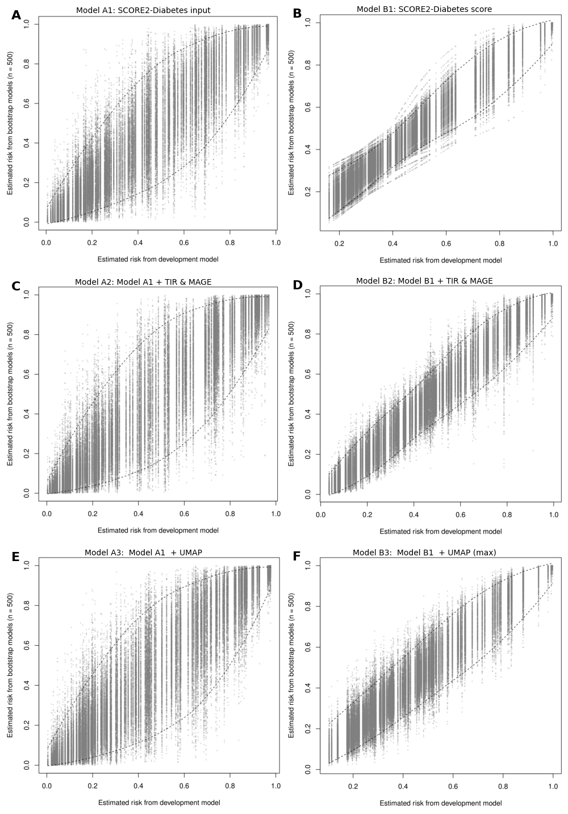

Appendix A — Study I: Search Strings
B Study I: Included and Excluded Reports
| Authors | Year | Full title | Journal | Volume | Issue | Pages | DOI |
|---|---|---|---|---|---|---|---|
| Bergdahl Ebba ; Forsander Gun ; Sundberg Frida ; Milkovic Linda ; Dangardt Frida ; | 2025 | Investigating the presence and detectability of structural peripheral arterial changes in children with well-regulated type 1 diabetes versus healthy controls using ultra-high frequency ultrasound: a single-centre cross-sectional and case-control study. | EClinicalMedicine | 81 | 103097 | 10.1016/j. eclinm.2025. 103097 | |
| Bezerra Marta Fernandes; Neves Celestino ; Neves Joao Sergio; Carvalho Davide ; | 2023 | Time in range and complications of diabetes: a cross-sectional analysis of patients with Type 1 diabetes. | Diabetology & metabolic syndrome | 15 | 1 | 244 | 10.1186 /s13098 -023-01 219-2 |
| Borg R ; Kuenen J C; Carstensen B ; Zheng H ; Nathan D M; Heine R J; Nerup J ; Borch-Johnsen K ; Witte D R; | 2011 | HbA1(c) and mean blood glucose show stronger associations with cardiovascular disease risk factors than do postprandial glycaemia or glucose variability in persons with diabetes: the A1C-Derived Average Glucose (ADAG) study. | Diabetologia | 54 | 1 | 69-72 | 10.1007 /s0012 5-010- 1918-2 |
| Buscemi S ; Re A ; Batsis J A; Arnone M ; Mattina A ; Cerasola G ; Verga S ; | 2010 | Glycaemic variability using continuous glucose monitoring and endothelial function in the metabolic syndrome and in Type 2 diabetes. | Comment in: Diabet Med. 2011 Jan;28(1):125-6; author reply 127-8 PMID: 21166857 [https://www.ncbi. nlm.nih.gov/ pubmed/211 66857] Comment in: Diabet Med. 2011 Jan;28(1):126; author reply 127-8 PMID: 21166858 [https://www.ncbi. nlm.nih.gov/pubmed /21166858] | 27 | 8 | 872-8 | 10.1111/ j.1464-5491. 2010 .03059.x |
| Cai Lingli ; Shen Wenqi ; Li Jiang ; Wang Bin ; Sun Ying ; Chen Yi ; Gao Ling ; Xu Fei ; Xiao Xinhua ; Wang Ningjian ; Lu Yingli ; | 2024 | Association between glycemia risk index and arterial stiffness in type 2 diabetes. | Journal of diabetes investigation | 15 | 5 | 614-622 | 10.1111 /jdi.1 4153 |
| Castaldo Ersilia ; Sabato Donata ; Lauro Davide ; Sesti Giorgio ; Marini Maria Adelaide; | 2011 | Hypoglycemia assessed by continuous glucose monitoring is associated with preclinical atherosclerosis in individuals with impaired glucose tolerance. | PloS one | 6 | 12 | e28312 | 10.1371/ journal. pone.0028 312 |
| Cesana Francesca ; Giannattasio Cristina ; Nava Stefano ; Soriano Francesco ; Brambilla Gianmaria ; Baroni Matteo ; Meani Paolo ; Varrenti Marisa ; Paleari Felice ; Gamba Pierluigi ; Facchetti Rita ; Alloni Marta ; Grassi Guido ; Mancia Giuseppe ; | 2013 | Impact of blood glucose variability on carotid artery intima media thickness and distensibility in type 1 diabetes mellitus. | Blood pressure | 22 | 6 | 355-61 | 10.31 09/080 37051. 2013. 791413 |
| Chen Xiao-min ; Zhang Yan ; Shen Xing-ping ; Huang Qun ; Ma Hong ; Huang Yang-Ling ; Zhang Wen-Qiang ; Wu Hao-Jie ; | 2010 | Correlation between glucose fluctuations and carotid intima-media thickness in type 2 diabetes. | Diabetes research and clinical practice | 90 | 1 | 95-9 | 10.1016 /j.diab res.2010. 05.004 |
| Chen Y ; Jia T ; Yan X ; Dai L ; | 2020 | Blood glucose fluctuations in patients with coronary heart disease and diabetes mellitus correlates with heart rate variability: A retrospective analysis of 210 cases. | Nigerian journal of clinical practice | 23 | 9 | 1194-1200 | 10.41 03/nj cp.njc p_529_ 19 |
| Cutruzzola Antonio ; Parise Martina ; Scavelli Faustina B; Barone Milena ; Gnasso Agostino ; Irace Concetta ; | 2022 | Time in Range Does Not Associate With Carotid Artery Wall Thickness and Endothelial Function in Type 1 Diabetes. | Journal of diabetes science and technology | 16 | 4 | 904-911 | 10.117 7/193 2296 82199 3178 |
| De Meulemeester Jolien ; Charleer Sara ; Visser Margaretha M; De Block Christophe ; Mathieu Chantal ; Gillard Pieter ; | 2024 | The association of chronic complications with time in tight range and time in range in people with type 1 diabetes: a retrospective cross-sectional real-world study. | Diabetologia | 67 | 8 | 1527-1535 | 10.100 7/s001 25-024 -0617 1-y |
| Deng Zixuan ; Wang Shiyun ; Lu Jingyi ; Zhang Rong ; Zhang Lei ; Lu Wei ; Zhu Wei ; Bao Yuqian ; Zhou Jian ; Hu Cheng ; | 2023 | Interaction between haptoglobin genotype and glycemic variability on diabetic macroangiopathy: a population-based cross-sectional study. | Endocrine | 82 | 2 | 311-318 | 10.10 07/s1 2020-0 23-0 3484-7 |
| Di Flaviani Alessandra ; Picconi Fabiana ; Di Stefano Paola ; Giordani Ilaria ; Malandrucco Ilaria ; Maggio Paola ; Palazzo Paola ; Sgreccia Fabrizio ; Peraldo Carlo ; Farina Fabrizio ; Frajese Gaetano ; Frontoni Simona ; | 2011 | Impact of glycemic and blood pressure variability on surrogate measures of cardiovascular outcomes in type 2 diabetic patients. | Diabetes care | 34 | 7 | 1605-9 | 10.233 7/dc 11-00 34 |
| Dzhun Yana ; Mankovsky Georgy ; Rudenko Nadiya ; Marushko Yevgen ; Saienko Yanina ; Mankovsky Borys ; | 2023 | Glycemic variability is associated with diastolic dysfunction in patients with type 2 diabetes. | Journal of diabetes and its complications | 37 | 11 | 108519 | 10.10 16/j.jd iacomp.202 3.108519 |
| El Malahi Anass ; Van Elsen Michiel ; Charleer Sara ; Dirinck Eveline ; Ledeganck Kristien ; Keymeulen Bart ; Crenier Laurent ; Radermecker Regis ; Taes Youri ; Vercammen Chris ; Nobels Frank ; Mathieu Chantal ; Gillard Pieter ; De Block Christophe ; | 2022 | Relationship Between Time in Range, Glycemic Variability, HbA1c, and Complications in Adults With Type 1 Diabetes Mellitus. | The Journal of clinical endocrinology and metabolism | 107 | 2 | e570-e581 | 10.1210 /clinem /dgab688 |
| Foreman Yuri D; van Doorn William P T M; Schaper Nicolaas C; van Greevenbroek Marleen M J; van der Kallen Carla J H; Henry Ronald M A; Koster Annemarie ; Eussen Simone J P M; Wesselius Anke ; Reesink Koen D; Schram Miranda T; Dagnelie Pieter C; Kroon Abraham A; Brouwers Martijn C G J; Stehouwer Coen D A; | 2021 | Greater daily glucose variability and lower time in range assessed with continuous glucose monitoring are associated with greater aortic stiffness: The Maastricht Study. | Diabetologia | 64 | 8 | 1880-1892 | 10.1007/s001 25-0 21-05 474-8 |
| Georeli Eirini ; Stamati Athina ; Dimitriadou Meropi ; Chainoglou Athanasia ; Tsinopoulou Assimina Galli; Stabouli Stella ; Christoforidis Athanasios ; | 2024 | Assessment of arterial stiffness in paediatric patients with type 1 diabetes mellitus. | Journal of diabetes and its complications | 38 | 8 | 108782 | 10.1016/j.jdiacomp.2024.108782 |
| Gimenez Marga ; Gilabert Rosa ; Lara Merce ; Conget Ignacio ; | 2011 | Preclinical arterial disease in patients with type 1 diabetes without other major cardiovascular risk factors or micro-/ macrovascular disease. | Diabetes & vascular disease research | 8 | 1 | 05/Nov | 10.11 77/14 79164 11038 8674 |
| Gordin D ; Ronnback M ; Forsblom C ; Makinen V ; Saraheimo M ; Groop P-H ; | 2008 | Glucose variability, blood pressure and arterial stiffness in type 1 diabetes. | Diabetes research and clinical practice | 80 | 3 | e4-7 | 10.1016 /j.dia bres.2008 .01. 010 |
| Guo Jinhui ; Wang Juan ; Zhao Zepeng ; Yu Lifang ; | 2021 | Association between glycemic control assessed by continuous glucose monitoring and stroke in patients with atrial fibrillation and diabetes mellitus. | Annals of palliative medicine | 10 | 8 | 9157-9164 | 10.2 1037/ap m-21- 2198 |
| He Ruibin ; Xuan Yingli ; Zhu Lingling ; Pang Shiqing ; Qin Li ; Tian Jingyan ; Yuan Jiangzi ; | 2023 | Low Blood Glucose Index Associated with Cardiovascular Events in Diabetic Hemodialysis Patients. | Blood purification | 52 | #### | 824-834 | 10.11 59/00 05319 64 |
| Helleputte Simon ; Calders Patrick ; Rodenbach Arthur ; Marlier Joke ; Verroken Charlotte ; De Backer Tine ; Lapauw Bruno ; | 2022 | Time-varying parameters of glycemic control and glycation in relation to arterial stiffness in patients with type 1 diabetes. | Cardiovascular diabetology | 21 | 1 | 277 | 10.1 186/s1 2933 -022-0 1717-z |
| Hoffman Robert P; Dye Amanda S; Huang Hong ; Bauer John A; | 2013 | Effects of glucose control and variability on endothelial function and repair in adolescents with type 1 diabetes. | ISRN endocrinology | 2013 | 876547 | 10.11 55/20 13/87 6547 | |
| Kakuta Kentaro ; Dohi Kaoru ; Miyoshi Miho ; Yamanaka Takashi ; Kawamura Masaki ; Masuda Jun ; Kurita Tairo ; Ogura Toru ; Yamada Norikazu ; Sumida Yasuhiro ; Ito Masaaki ; | 2017 | Impact of renal function on the underlying pathophysiology of coronary plaque composition in patients with type 2 diabetes mellitus. | Cardiovascular diabetology | 16 | 1 | 131 | 10.1186 /s1293 3-017-0 618-3 |
| Koroleva Elena A; Korbut Anton I; Bulumbaeva Dinara M; Klimontov Vadim V; | 2022 | Modeling of Risk Factors for Peripheral Artery Disease in Patients with Type 2 Diabetes | 2022 IEEE International Multi-Conference on Engineering, Computer and Information Sciences (SIBIRCON) | NA | NA | 200-205 | 10.11 09/sibi rcon5 6155. 2022. 10017 018 |
| Li Jinfeng ; Li Ya ; Ma Weiguo ; Liu Yishan ; Yin Xiaohong ; Xie Chuanqing ; Bai Jiao ; Zhang Min ; | 2020 | Association of Time in Range levels with Lower Extremity Arterial Disease in patients with type 2 diabetes. | Diabetes & metabolic syndrome | 14 | 6 | 2081-2085 | 10.10 16/j. dsx.2020. 09.028 |
| Lu Jingyi ; Ma Xiaojing ; Shen Yun ; Wu Qiang ; Wang Ren ; Zhang Lei ; Mo Yifei ; Lu Wei ; Zhu Wei ; Bao Yuqian ; Vigersky Robert A; Jia Weiping ; Zhou Jian ; | 2020 | Time in Range Is Associated with Carotid Intima-Media Thickness in Type 2 Diabetes. | Diabetes technology & therapeutics | 22 | 2 | 72-78 | 10.1 089/di a.20 19.0251 |
| Lu Jingyi ; Wang Chunfang ; Shen Yun ; Chen Lei ; Zhang Lei ; Cai Jinghao ; Lu Wei ; Zhu Wei ; Hu Gang ; Xia Tian ; Zhou Jian ; | 2021 | Time in Range in Relation to All-Cause and Cardiovascular Mortality in Patients With Type 2 Diabetes: A Prospective Cohort Study. | Comment in: Diabetes Care. 2021 Feb;44(2):319-320 PMID: 33472967 [https://www.ncbi.nlm.nih.gov/pubmed/33472967] | 44 | 2 | 549-555 | 10.2 337/ dc2 0-1862 |
| Magri Caroline Jane; Mintoff Dillon ; Camilleri Liberato ; Xuereb Robert G; Galea Joseph ; Fava Stephen ; | 2018 | Relationship of Hyperglycaemia, Hypoglycaemia, and Glucose Variability to Atherosclerotic Disease in Type 2 Diabetes. | Journal of diabetes research | 2018 | 7464320 | 10.11 55/2 018/ 74643 20 | |
| Mesa Alex ; Gimenez Marga ; Pueyo Irene ; Perea Veronica ; Vinals Clara ; Blanco Jesus ; Vinagre Irene ; Seres-Noriega Tonet ; Boswell Laura ; Esmatjes Enric ; Conget Ignacio ; Amor Antonio J; | 2022 | Hyperglycemia and hypoglycemia exposure are differentially associated with micro- and macrovascular complications in adults with Type 1 Diabetes. | Diabetes research and clinical practice | 189 | 109938 | 10.1 016/ j.di bres.20 22.10 9938 | |
| Mi Shu-Hua ; Su Gong ; Li Zhao ; Yang Hong-Xia ; Zheng Hong ; Tao Hong ; Zhou Yun ; Tian Lei ; | 2012 | Comparison of glycemic variability and glycated hemoglobin as risk factors of coronary artery disease in patients with undiagnosed diabetes. | Chinese medical journal | 125 | 1 | 38-43 | 10.376 0/c ma.j.iss n.0366- 6999 .2012. 01.008 |
| Mita Tomoya ; Katakami Naoto ; Okada Yosuke ; Yoshii Hidenori ; Osonoi Takeshi ; Nishida Keiko ; Shiraiwa Toshihiko ; Kurozumi Akira ; Taya Naohiro ; Wakasugi Satomi ; Sato Fumiya ; Ishii Ryota ; Gosho Masahiko ; Shimomura Iichiro ; Watada Hirotaka ; | 2023 | Continuous glucose monitoring-derived time in range and CV are associated with altered tissue characteristics of the carotid artery wall in people with type 2 diabetes. | Diabetologia | 66 | 12 | 2356-2367 | 10.1 007/s0 0125 -023-0 6013-3 |
| Mo Yifei ; Zhou Jian ; Li Mei ; Wang Yuwei ; Bao Yuqian ; Ma Xiaojing ; Li Ding ; Lu Wei ; Hu Cheng ; Li Minghua ; Jia Weiping ; | 2013 | Glycemic variability is associated with subclinical atherosclerosis in Chinese type 2 diabetic patients. | Cardiovascular diabetology | 12 | 15 | 10.118 6/1 475 -2840- 12-15 | |
| Morandi Anita ; Piona Claudia ; Corradi Massimiliano ; Marigliano Marco ; Giontella Alice ; Orsi Silvia ; Emiliani Federica ; Tagetti Angela ; Marcon Denise ; Fava Cristiano ; Maffeis Claudio ; | 2023 | Risk factors for pre-clinical atherosclerosis in adolescents with type 1 diabetes. | Diabetes research and clinical practice | 198 | 110618 | 10.1016/ j.dia bres.2023. 110618 | |
| Pena Alexia S; Couper Jennifer J; Harrington Jennifer ; Gent Roger ; Fairchild Jan ; Tham Elaine ; Baghurst Peter ; | 2012 | Hypoglycemia, but not glucose variability, relates to vascular function in children with type 1 diabetes. | Diabetes technology & therapeutics | 14 | 6 | 457-62 | 10.10 89/dia. 2011. 0229 |
| Pertseva N ; Moshenets K ; | 2023 | Definition of the relationships between ambulatory blood pressure characteristics and blood glucose levels in type 2 diabetes patients with well-controlled arterial hypertension | Romanian Journal of Diabetes, Nutrition and Metabolic Diseases | 30 | 2 | 215-221 | 10.463 89/ rjd-20 23-12 90 |
| Piona Claudia ; Marigliano Marco ; Mancioppi Valentina ; Mozzillo Enza ; Occhiati Luisa ; Zanfardino Angela ; Iafusco Dario ; Maltoni Giulio ; Zucchini Stefano ; Delvecchio Maurizio ; Passanisi Stefano ; Lombardo Fortunato ; Maffeis Claudio ; | 2023 | Glycemic variability and Time in range are associated with the risk of overweight and high LDL-cholesterol in children and youths with Type 1 Diabetes. | Hormone research in paediatrics | 10.11 59/000 5355 54 | |||
| Pulkkinen Mari-Anne ; Tuomaala Anna-Kaisa ; Hero Matti ; Gordin Daniel ; Sarkola Taisto ; | 2020 | Motivational Interview to improve vascular health in Adolescents with poorly controlled type 1 Diabetes (MIAD): a randomized controlled trial. | BMJ open diabetes research & care | 8 | 1 | 10.113 6/bmj drc-2 020-001 216 | |
| Sheng Xia ; Li Ting ; Hu Yi ; Xiong Cheng-Shun ; Hu Ling ; | 2023 | Correlation Between Blood Glucose Indexes Generated by the Flash Glucose Monitoring System and Diabetic Vascular Complications. | Diabetes, metabolic syndrome and obesity : targets and therapy | 16 | 2447-2456 | 10.21 47/DMS O.S418 224 | |
| Snell-Bergeon J K; Roman R ; Rodbard D ; Garg S ; Maahs D M; Schauer I E; Bergman B C; Kinney G L; Rewers M ; | 2010 | Glycaemic variability is associated with coronary artery calcium in men with Type 1 diabetes: the Coronary Artery Calcification in Type 1 Diabetes study. | Diabetic medicine : a journal of the British Diabetic Association | 27 | 12 | 1436-42 | 10.111 1/j.146 4-549 1.201 0.031 27.x |
| Su Gong ; Mi Shuhua ; Tao Hong ; Li Zhao ; Yang Hongxia ; Zheng Hong ; Zhou Yun ; Ma Changsheng ; | 2011 | Association of glycemic variability and the presence and severity of coronary artery disease in patients with type 2 diabetes. | Cardiovascular diabetology | 10 | 19 | 10.11 86/14 75-2 840-10 -19 | |
| Taya Naohiro ; Katakami Naoto ; Mita Tomoya ; Okada Yosuke ; Wakasugi Satomi ; Yoshii Hidenori ; Shiraiwa Toshihiko ; Otsuka Akihito ; Umayahara Yutaka ; Ryomoto Kayoko ; Hatazaki Masahiro ; Yasuda Tetsuyuki ; Yamamoto Tsunehiko ; Gosho Masahiko ; Shimomura Iichiro ; Watada Hirotaka ; | 2021 | Associations of continuous glucose monitoring-assessed glucose variability with intima-media thickness and ultrasonic tissue characteristics of the carotid arteries: a cross-sectional analysis in patients with type 2 diabetes. | Cardiovascular diabetology | 20 | 1 | 95 | 10.11 86/s1 2933- 021- 0128 8-5 |
| Torimoto Keiichi ; Okada Yosuke ; Mita Tomoya ; Tanaka Kenichi ; Sato Fumiya ; Katakami Naoto ; Yoshii Hidenori ; Nishida Keiko ; Tanaka Yoshiya ; Ishii Ryota ; Gosho Masahiko ; Shimomura Iichiro ; Watada Hirotaka ; | 2025 | Association of Glycaemia Risk Index With Indices of Atherosclerosis: A Cross-Sectional Study. | Journal of diabetes | 17 | 3 | e70065 | 10.1111/ 1753- 0407. 70065 |
| Wakasugi Satomi ; Mita Tomoya ; Katakami Naoto ; Okada Yosuke ; Yoshii Hidenori ; Osonoi Takeshi ; Kuribayashi Nobuichi ; Taneda Yoshinobu ; Kojima Yuichi ; Gosho Masahiko ; Shimomura Iichiro ; Watada Hirotaka ; | 2021 | Associations between continuous glucose monitoring-derived metrics and arterial stiffness in Japanese patients with type 2 diabetes. | Cardiovascular diabetology | 20 | 1 | 15 | 10.118 6/s129 33-020- 011 94-2 |
| Watanabe Makoto ; Kawai Yasuyuki ; Kitayama Michihiko ; Akao Hironubu ; Motoyama Atsushi ; Wakasa Minoru ; Saito Ryuhei ; Aoki Hirofumi ; Fujibayashi Kousuke ; Tsuchiya Taketsugu ; Nakanishi Hiroaki ; Saito Kazuyuki ; Takeuchi Masayoshi ; Kajinami Kouji ; | 2017 | Diurnal glycemic fluctuation is associated with severity of coronary artery disease in prediabetic patients: Possible role of nitrotyrosine and glyceraldehyde-derived advanced glycation end products. | Journal of cardiology | 69 | 4 | 625-631 | 10.101 6/j.j jcc.2 016.07. 001 |
| Wei Wei ; Zhao Shi ; Fu Sha-Li ; Yi Lan ; Mao Hong ; Tan Qin ; Xu Pan ; Yang Guo-Liang ; | 2019 | The Association of Hypoglycemia Assessed by Continuous Glucose Monitoring With Cardiovascular Outcomes and Mortality in Patients With Type 2 Diabetes. | Frontiers in endocrinology | 10 | 536 | 10.33 89/fe ndo.2 019.00 536 | |
| Wei Yinghua ; Liu Chunyan ; Liu Yanyu ; Zhang Zhen ; Feng Zhouqin ; Yang Xinyi ; Liu Juan ; Lei Haiyan ; Zhou Hui ; Shen Qiuyue ; Lu Bin ; Gu Ping ; Shao Jiaqing ; | 2022 | The association between time in the glucose target range and abnormal ankle-brachial index: a cross-sectional analysis. | Cardiovascular diabetology | 21 | 1 | 281 | 10.1186/s12 933-022 -0171 8-y |
| Yano Yuichiro ; Hayakawa Manabu ; Kuroki Kazuo ; Ueno Hiroaki ; Yamagishi Sho-ichi ; Takeuchi Masayoshi ; Eto Takuma ; Nagata Naoto ; Nakazato Masamitsu ; Shimada Kazuyuki ; Kario Kazuomi ; | 2013 | Nighttime blood pressure, nighttime glucose values, and target-organ damages in treated type 2 diabetes patients. | Atherosclerosis | 227 | 1 | 135-9 | 10.10 16/j. athe roscl erosis. 2012.12. 006 |
| Yokota Shun ; Tanaka Hidekazu ; Mochizuki Yasuhide ; Soga Fumitaka ; Yamashita Kentaro ; Tanaka Yusuke ; Shono Ayu ; Suzuki Makiko ; Sumimoto Keiko ; Mukai Jun ; Suto Makiko ; Takada Hiroki ; Matsumoto Kensuke ; Hirota Yushi ; Ogawa Wataru ; Hirata Ken-Ichi ; | 2019 | Association of glycemic variability with left ventricular diastolic function in type 2 diabetes mellitus. | Cardiovascular diabetology | 18 | 1 | 166 | 10.11 86/s12 933-01 9-0971 -5 |
| Zhang Xingguang ; Xu Xiuping ; Jiao Xiumin ; Wu Jinxiao ; Zhou Shujing ; Lv Xiaofeng ; | 2013 | The effects of glucose fluctuation on the severity of coronary artery disease in type 2 diabetes mellitus. | Journal of diabetes research | 2013 | 576916 | 10.11 55/201 3/576 916 | |
| Zhang X-G ; Zhang Y-Q ; Zhao D-K ; Wu J-X ; Zhao J ; Jiao X-M ; Chen B ; Lv X-F ; | 2014 | Relationship between blood glucose fluctuation and macrovascular endothelial dysfunction in type 2 diabetic patients with coronary heart disease. | European review for medical and pharmacological sciences | 18 | 23 | 3593-600 | https:// www.europe anreview .org/wp /wp-conte nt/uplo ads/3593- 3600.pdf |
| Zhang Chuangbiao ; Tang Meili ; Lu Xiaohua ; Zhou Yan ; Zhao Wane ; Liu Yu ; Liu Yan ; Guo Xiujie ; | 2020 | Relationship of ankle-brachial index, vibration perception threshold, and current perception threshold to glycemic variability in type 2 diabetes. | Medicine | 99 | 12 | e19374 | 10.1 097/M D.0000 00000 0019374 |
| Zhou Hui ; Wang Wei ; Shen Qiuyue ; Feng Zhouqin ; Zhang Zhen ; Lei Haiyan ; Yang Xinyi ; Liu Jun ; Lu Bin ; Shao Jiaqing ; Gu Ping ; | 2022 | Time in range, assessed with continuous glucose monitoring, is associated with brachial-ankle pulse wave velocity in type 2 diabetes: A retrospective single-center analysis. | Frontiers in endocrinology | 13 | 1014568 | 10.3389/ fendo. 2022.101 4568 |
Note. Table shows included studies identified in the review. Ovid export links and reference type fields were omitted to improve readability. DOI values are shown where available.
| Reference | Reason for exclusion |
|---|---|
| Barbieri M, Rizzo MR, Marfella R, Boccardi V, Esposito A, Pansini A, Paolisso G. Decreased carotid atherosclerotic process by control of daily acute glucose fluctuations in diabetic patients treated by DPP-IV inhibitors. Atherosclerosis. 2013 Apr;227(2):349-54. | Not CGM metric |
| Cai J, Liu J, Lu J, Ni J, Wang C, Chen L, Lu W, Zhu W, Xia T, Zhou J. Impact of time in tight range on all-cause and cardiovascular mortality in type 2 diabetes: A prospective cohort study. Diabetes Obes Metab. 2025 Apr;27(4):2154-62. | Studies post-surgery |
| Catargi B, Gerbaud E. Glucose fluctuations and hypoglycemia as new cardiovascular risk factors in diabetes. Ann Endocrinol (Paris). 2021 Jun;82(3-4):144-5. | Not original article |
| Chernikova NA, Kamynina LL, Ametov AS. [The сardiometabolic assessment of the glycemic variability in patients with diabetes mellitus: the role of the glucocardiomonitoring]. Kardiologiia. 2020 Jun 3;60(5):902. | Not CVD outcome |
| Costantino S, Paneni F, Battista R, Castello L, Capretti G, Chiandotto S, Tanese L, Russo G, Pitocco D, Lanza GA, Volpe M, Lüscher TF, Cosentino F. Impact of Glycemic Variability on Chromatin Remodeling, Oxidative Stress, and Endothelial Dysfunction in Patients With Type 2 Diabetes and With Target HbA1c Levels. Diabetes. 2017 Sep;66(9):2472-82. | Not CVD outcome |
| Ehrmann D, Chatwin H, Schmitt A, Soeholm U, Kulzer B, Axelsen JL, Broadley M, Haak T, Pouwer F, Hermanns N. Reduced heart rate variability in people with type 1 diabetes and elevated diabetes distress: Results from the longitudinal observational DIA-LINK1 study. Diabet Med. 2023 Apr;40(4):e15040. | Not CVD outcome |
| Howsawi AA, Alem MM. Clinical implications and pharmacological considerations of glycemic variability in patients with type 2 diabetes mellitus. Sci Rep. 2024 Oct 14;14(1):24062. | Not CGM metric |
| Huang J, Zhang X, Li J, Tang L, Jiao X, Lv X. Impact of glucose fluctuation on acute cerebral infarction in type 2 diabetes. Can J Neurol Sci. 2014 Jul;41(4):486-92. | Studies post-surgery |
| Inaba Y, Tsutsumi C, Haseda F, Fujisawa R, Mitsui S, Sano H, Terasaki J, Hanafusa T, Imagawa A. Impact of glycemic variability on the levels of endothelial progenitor cells in patients with type 1 diabetes. Diabetol Int. 2017 Sep 4;9(2):113-20. | Not CVD outcome |
| Ito T, Ichihashi T, Fujita H, Sugiura T, Yamamoto J, Kitada S, Nakasuka K, Kawada Y, Ohte N. The impact of intraday glucose variability on coronary artery spasm in patients with dysglycemia. Heart Vessels. 2019 Aug;34(8):1250-7. | Studies post-surgery |
| Karnebeek K, Rijks JM, Dorenbos E, Gerver WM, Plat J, Vreugdenhil ACE. Changes in Free-Living Glycemic Profiles after 12 Months of Lifestyle Intervention in Children with Overweight and with Obesity. Nutrients. 2020 Apr 26;12(5):1228. | Not CVD outcome |
| Kietsiriroje N, Pearson SM, O’Mahoney LL, West DJ, Ariëns RA, Ajjan RA, Campbell MD. Glucose variability is associated with an adverse vascular profile but only in the presence of insulin resistance in individuals with type 1 diabetes: An observational study. Diab Vasc Dis Res. 2022 May-Jun;19(3):14791641221103217. | Not CVD outcome |
| Klimontov VV, Koroleva EA, Khapaev RS, Korbut AI, Lykov AP. Carotid Artery Disease in Subjects with Type 2 Diabetes: Risk Factors and Biomarkers. J Clin Med. 2021 Dec 24;11(1):72. | Not CGM metric |
| Koroleva EA, Khapaev RS, Lykov AP, Korbut AI, Klimontov VV. Association of carotid atherosclerosis and peripheral artery disease in patients with type 2 diabetes: risk factors and biomarkers. Diabetes Mellitus. 2023;26(2):172-81. Russian. | Language not understood |
| Maiorino MI, Della Volpe E, Olita L, Bellastella G, Giugliano D, Esposito K. Glucose variability inversely associates with endothelial progenitor cells in type 1 diabetes. Endocrine. 2015 Feb;48(1):342-5. | Not CVD outcome |
| Musurakis C, Poudel B, Chitrakar S, Qureshi F, Gilden JL. Evaluation Of Glucose Variability By Continuous Glucose Monitoring In Patients With Diabetes Mellitus And History Of Stroke. J Endocr Soc. 2023 Oct-Nov;7(Suppl 1): bvad114.970. | Not original article |
| Singh S, Singh DP, Singh SS, Srivastava AK. High Glycaemic Variability is a Pro-arrhythmic Factor in Patient of Type-2 Diabetes Mellitus With Heart Failure. Int J Diabetes Dev Ctries. 2019 Nov;39(Suppl 1):S1-S42. | Not original article |
| Stahn A, Pistrosch F, Ganz X, Teige M, Koehler C, Bornstein S, Hanefeld M. Relationship between hypoglycemic episodes and ventricular arrhythmias in patients with type 2 diabetes and cardiovascular diseases: silent hypoglycemias and silent arrhythmias. Diabetes Care. 2014 Feb;37(2):516-20. | Not CVD outcome |
| Sugimoto T, Saji N, Omura T, Tokuda H, Miura H, Kawashima S, Ando T, Nakamura A, Uchida K, Matsumoto N, Fujita K, Kuroda Y, Crane PK, Sakurai T. Cross-sectional association of continuous glucose monitoring-derived metrics with cerebral small vessel disease in older adults with type 2 diabetes. Diabetes Obes Metab. 2024 Aug;26(8):3318-27. | Not CVD outcome |
| Tang X, Li S, Wang Y, Wang M, Yin Q, Mu P, Lin S, Qian X, Ye X, Chen Y. Glycemic variability evaluated by continuous glucose monitoring system is associated with the 10-y cardiovascular risk of diabetic patients with well-controlled HbA1c. Clin Chim Acta. 2016 Oct 1;461:146-50. | Not CVD outcome |
| Tateishi K, Saito Y, Kitahara H, Kobayashi Y. Impact of glycemic variability on coronary and peripheral endothelial dysfunction in patients with coronary artery disease. J Cardiol. 2022 Jan;79(1):65-70. | Not CVD outcome |
| Tong L, Chi C, Zhang Z. Association of various glycemic variability indices and vascular outcomes in type-2 diabetes patients: A retrospective study. Medicine (Baltimore). 2018 May;97(21):e10860. | Not CGM metric |
| Wang X, Zhao X, Dorje T, Yan H, Qian J, Ge J. Glycemic variability predicts cardiovascular complications in acute myocardial infarction patients with type 2 diabetes mellitus. Int J Cardiol. 2014 Mar 15;172(2):498-500. | Studies post-surgery |
| Xia J, Xu J, Hu S, Hao H, Yin C, Xu D. Impact of glycemic variability on the occurrence of periprocedural myocardial infarction and major adverse cardiovascular events (MACE) after coronary intervention in patients with stable angina pectoris at 6months follow-up. Clin Chim Acta. 2017 Aug;471:196-200. | Not CGM metric |
| Yamamoto K, Ito T, Nagasato T, Shinnakasu A, Kurano M, Arimura A, Arimura H, Hashiguchi H, Deguchi T, Maruyama I, Nishio Y. Effects of glycemic control and hypoglycemia on Thrombus formation assessed using automated microchip flow chamber system: an exploratory observational study. Thromb J. 2019 Sep 2;17:17. | Not CVD outcome |
| Yang XJ, He H, Lü XF, Wen XR, Wang C, Chen DW, Li XJ, Ran XW. [Association of glycaemic variability and carotid intima-media thickness in patients with type 2 diabetes mellitus]. Sichuan Da Xue Xue Bao Yi Xue Ban. 2012 Sep;43(5):734-8. Chinese. | Language not understood |
| Yang X, Su G, Zhang T, Yang H, Tao H, Du X, Dong J. Comparison of admission glycemic variability and glycosylated hemoglobin in predicting major adverse cardiac events among type 2 diabetes patients with heart failure following acute ST-segment elevation myocardial infarction. J Transl Int Med. 2024 May 21;12(2):188-196. | Studies post-surgery |
| Yu MG, Jangolla SVT, Ziemniak N, Viebranz E, Chokshi T, Park K, Wu IH, Shah H, King GL. Cardiac Imaging And Metabolomics Studies Suggest Differential Risk And Protective Biomarkers For Cardiovascular Disease In Renoprotected, Long-Duration Type 1 Diabetes. J Endocr Soc. 2024 Oct-Nov;8(Suppl 1):bvae163.691. | Other reason (not yet published) |
| Zhang J, Li L, Zhai H, Chen H, Wang L, Li N, Liu R, Xia Y. Impact of blood glucose fluctuation on endothelial dysfunction and severity of stenosis in aged acute coronary syndrome patients. Int J Clin Exp Med. 2016;9(11):2210-9. | Studies post-surgery |
| Zhang J, Yang J, Liu L, Li L, Cui J, Wu S, Tang K. Significant abnormal glycemic variability increased the risk for arrhythmias in elderly type 2 diabetic patients. BMC Endocr Disord. 2021 Apr 27;21(1):83. | Not CVD outcome |
| Reference | Reason for exclusion |
|---|---|
| Gohbara M, Hibi K, Mitsuhashi T, Maejima N, Iwahashi N, Kataoka S, Akiyama E, Tsukahara K, Kosuge M, Ebina T, Umemura S, Kimura K. Glycemic Variability on Continuous Glucose Monitoring System Correlates With Non-Culprit Vessel Coronary Plaque Vulnerability in Patients With First-Episode Acute Coronary Syndrome - Optical Coherence Tomography Study. Circ J. 2016;80(1):202-10. | Studies post-surgery |
| Jin SM, Kim TH, Bae JC, Hur KY, Lee MS, Lee MK, Kim JH. Clinical factors associated with absolute and relative measures of glycemic variability determined by continuous glucose monitoring: an analysis of 480 subjects. Diabetes Res Clin Pract. 2014 May;104(2):266-72. | CGM metric as outcome |
| Kataoka S, Gohbara M, Iwahashi N, Sakamaki K, Nakachi T, Akiyama E, Maejima N, Tsukahara K, Hibi K, Kosuge M, Ebina T, Umemura S, Kimura K. Glycemic Variability on Continuous Glucose Monitoring System Predicts Rapid Progression of Non-Culprit Lesions in Patients With Acute Coronary Syndrome. Circ J. 2015;79(10):2246-54. | Studies post-surgery |
| Sugimoto H, Hironaka K, Yamada T, Otowa-Suematsu N, Hirota Y, Otake H, Hirata K, Sakaguchi K, Ogawa W, Kuroda S. Three components of glucose dynamics – value, variability, and autocorrelation – are independently associated with coronary plaque vulnerability. medRxiv 2023.11.21.23298816. | Other reason (preprint) |
C Study I: Geographical Location
Asia (n=27)
- China (n=19)
- Japan (n=8)
Europe (n=22)
- Italy (n=7)
- Belgium (n=3)
- Ukraine (n=2)
- Finland (n=2)
- Spain (n=2)
- Greece (n=1)
- Malta (n=1)
- Sweden (n=1)
- The Netherlands (n=1)
- Portugal (n=1)
- Russia (n=1)
North America (n=2)
- USA (n=2)
Australia / Oceania (n=1)
- Australia (n=1)
Borg 2011(ADAG study) had study centers in:
- Europe: Netherlands, Denmark, Italy
- Africa: 2011
- North America: USA
Borg R, Kuenen J C, Carstensen B, Zheng H, Nathan D M, Heine R J, et al. HbA1(c) and mean blood glucose show stronger associations with cardiovascular disease risk factors than do postprandial glycaemia or glucose variability in persons with diabetes: the A1C-Derived Average Glucose (ADAG) study. 2011; ADAG Study Group, editor. Diabetologia. 54: 69–72. doi:10.1007/s00125-010-1918-2
D Study I: Clinical and Subclinical Results
| Author, year | Study Design | Population | Size | Age (Years) | Diabetes duration (Years) | HbA1c, mmol/mol (%) | CGM duration |
|---|---|---|---|---|---|---|---|
| Chen, 2020\(^\dagger\) | Longitudinal (prospective) and cross-sectional (retrospective)FU: in-hospital or within 3 months after discharge from hospital | T2D with CAD (Only male)BG control, n = 90BG fluctuation, n = 120 | 210 | BG controls: 55.53 \(\pm\) 7.30BG fluctuation: 56.41 \(\pm\) 7.67 | BG controls: 6.59 \(\pm\) 2.30BG fluctuation group: 6.92 \(\pm\) 2.25 | nr | 2 days |
| He, 2023 | Longitudinal (prospective)FU: 1 year | T2D with kidney disease on hemodialysisHigh TIR, n = 12Low TIR, n = 15 | 27 | High TIR: 66 [63, 73]Low TIR: 70 [64, 75] | High TIR: 2 [1.7, 10]Low TIR: 5 [0.75, 20] | High TIR: 43 [37, 51] mmol/mol (6.1 [5.5, 6.8]%)Low TIR: 66 [46, 70] mmol/mol (8.2 [6.4, 8.6]%) | 14 days |
| Lu, 2021 | Longitudinal (prospective)FU: until death occurred or 3–13 yearsMedian: 6.9 years | T2D, hospitalized | 6225 | mean age = 61.7 years | mean: 9.7 years | 74.0 \(\pm\) 24.0 mmol/mol (8.9 \(\pm\) 2.2%) | 72 hours |
| Wei, 2019 | Longitudinal (prospective)Median FU [IQR]: 31 months (22, 56) | T2D Divided into three groups:1) No hypo, n = 11732) Mild hypo (lvl1), n = 3233) Severe hypo (lvl3), n = 24 | 1520 | No hypoglycemia: 58.59 \(\pm\) 11.26Hypoglycemia: 62.27 \(\pm\) 11.58 | No hypoglycemia: 6.46 \(\pm\) 6.00Hypoglycemia: 7.78 \(\pm\) 7.37 | No hypoglycemia: (8.19 \(\pm\) 2.10%)Hypoglycemia: (7.73 \(\pm\) 1.96%) | 3 days |
| Bezerra, 2023 | Cross-sectional | T1D | 161 | 37.4 \(\pm\) 13.4 | 17.7 \(\pm\) 10.6 | (7.5 \(\pm\) 1.1%) | 14 days |
| De Meulemeester, 2024\(^\dagger\) | Cross-sectional | T1D | 808 | 44.8 \(\pm\) 15.2 | 23.1 \(\pm\) 13.6 | 63 \(\pm\) 13 mmol/mol (7.9 \(\pm\) 1.2%) | 2 weeks |
| Deng, 2023 | Cross-sectional | T2D | 860 | HP 1 carriers: 53.5 \(\pm\) 13.3HP 2-2: 51.7 \(\pm\) 14.6 | HP 1 carriers: 8.6 \(\pm\) 6.4HP 2-2: 8.6 \(\pm\) 6.7 | HP1 carriers: 73.0 \(\pm\) 24.0 mmol/mol (8.8 \(\pm\) 2.2%)Hp2-2: 72.0 \(\pm\) 23.0 mmol/mol (8.7 \(\pm\) 2.1) | 3 days |
| El Malahi, 2022 | Cross-sectional | T1D starting on sensor-augmented pump therapy | 515 | Mean \(\pm\) SD [years]:42.2 \(\pm\) 12.5 | 22.3 \(\pm\) 11.6 | 60 \(\pm\) 9.8 mmol/mol (7.6 \(\pm\) 0.9 %) | 2 weeks |
| Guo, 2021 | Cross-sectional | T1D or T2D with atrial fibrillationWith Stroke, n = 48Without Stroke, n = 462 | 510 | Stroke: 70.3 \(\pm\) 12.1No stroke: 68.1 \(\pm\) 9.4 | nr | No Stroke: 7.4 \(\pm\) 2.1Stroke: 8.2 \(\pm\) 1.7 | 72 hour |
| Li, 2020 | Cross-sectional | T2D with LEAD, n = 179T2D without LEAD, n = 157 | 336 | Without LEAD: 55.94 \(\pm\) 12.45With LEAD: 65.56 \(\pm\) 11.99 | Without LEAD: 6.92 \(\pm\) 3.54With LEAD: 10.32 \(\pm\) 4.14 | Without LEAD: 7.85 \(\pm\) 1.41%With LEAD: 8.97 \(\pm\) 1.63% | 72 hours |
| Magri, 2018\(^\dagger\) | Cross-sectional | T2D | 121 | 64 [57, 68] | 3 [2, 5] | median: 45 mmol/mol (6.8%) | 72 hours |
| Mi, 2012 | Cross-sectional | T2D with chest painWithout CAD, n = 202With CAD, n = 84 | 286 | Without CAD: 62.8 \(\pm\) 8.7With CAD: 66.6 \(\pm\) 9.2 | nr | Non-CAD: 7.51 \(\pm\) 0.80%CAD: 7.75 \(\pm\) 0.92% | 72 hours (Only intermediate 48 hours were used) |
| Sheng, 2023 | Cross-sectional | T2D, hospitalized | 545 | mean age of (61.22 \(\pm\) 11.21) years | nr | 8.51 \(\pm\) 1.85% | 7-14 days |
| Su, 2011 | Cross-sectional | T2D with chest painWithout CAD, n = 92With CAD, n = 252 | 344 | Without CAD: 61 \(\pm\) 9With CAD: 65 \(\pm\) 9 | Without CAD: 4.8 \(\pm\) 5.7With CAD: 6.5 \(\pm\) 6.4 | non-CAD: 7.5 \(\pm\) 1.4%CAD: 7.6 \(\pm\) 1.5% | 72 hours (only 48 hours used) |
| Watanabe, 2017 | Cross-sectional | Prediabetes, hospitalized | 28 | 64.3 \(\pm\) 12.8 | nr | 5.41 \(\pm\) 0.35% | 72 hours (Only used the middle 48 hours) |
| Zhang, 2013 | Cross-sectional | T2D with cardiovascular complicationsGroup A: healthy individualsGroup B: T2D without cardiovascular complicationsGroup C: T2D with cardiovascular complications | 92 | Group A: 56.3 \(\pm\) 6.1Group B: 56.1 \(\pm\) 6.6Group C: 61.7 \(\pm\) 7.2 | nr | Group A: 5.3 \(\pm\) 0.3%Group B: 6.6 \(\pm\) 1.2%Group C: 7.5 \(\pm\) 1.4% | 72 hours |
\(^\dagger\) This study appears both in the clinical and subclinical disease outcome tables due to investigating multiple CVD outcomes.
Note: Age is reported in years either as an interval, mean \(\pm\) SD, or median (IQR). Diabetes duration values originally reported in months were converted to years for consistency (months \(\div\) 12).
Abbreviations: CGM, continuous glucose monitoring; FU, follow-up; T1D, type 1 diabetes; T2D, type 2 diabetes; CAD, coronary artery disease; hypo, hypoglycemia; LEAD, lower extremity arterial disease; IQR, interquartile range; nr, not reported.
| Author, year | Study Design | Population + age [years] | Size of population | CGM duration | Adjusted |
|---|---|---|---|---|---|
| Chen, 2020† | Longitudinal and cross-sectional FU: within 3 months | T2D + CAD,Only maleAge: 45-70 | 210 | 3rd and 5th day of the study | Univariate |
| Mita, 2023 | Longitudinal FU: 104 weeks | T2D Age: 30-80 | 553 | 14 days at baseline and at week 104 | DemographicAnthropometric LifestyleMedical HistoryPhysiologicalBiochemicalMedicationCVD marker |
| Bergdahl, 2025 | Cross-sectional | T1D, n = 50 Normal controls, n = 41 Age 6-15.99 | 91 | DemographicAnthropometricPhysiologicalBiochemicalCGM/GV metrics | |
| Borg, 2011 | Cross-sectional | T1D = 268 T2D = 159 Age: 18-70 | 427 | 48 hours *3 times | DemographicLifestyle Medical History |
| Buscemi, 2010 | Cross-sectional | Metabolic syndrome = 23Withhout metabolic syndrome = 30 T2D not diagnosed prior to study = 22 Age: 30-65 | 75 | 46-48 hours | nr |
| Cai, 2024 | Cross-sectional | T2D Age ≥ 18 year | 342 | 14 days | Demographic AnthropometricLifestyle Medical History Physiological Biochemical |
| Castaldo, 2011 | Cross-sectional | Normal glucose tolerance = 36 Impaired glucose tolerance = 43 Age: 23–70 | 79 | 72 hours | Demographic Anthropometric Lifestyle Physiological Biochemical CGM/GV metrics |
| Cesana, 2013 | Cross-sectional | T1D, free of CVD Mean age±SD: 40.8 ± 7.6 | 17 | 24 hours | Univariate |
| Chen, 2010 | Cross-sectional | T2D with CVD = 16 T2D without CVD = 20 Normal controls = 10 Age: 33–86 | 46 | 72 hours | Univariate |
| Cutruzzola, 2022 | Cross-sectional | T1D = 70 Mean age: 35 ± 13 Controls, n = 35 comparable on sex and age Mean age±SD: 32 ± 13 | 105 | 6 months | nr |
| De Meulemeester, 2024† | Cross-sectional | T1D Mean age±SD: 44.8 ± 15.2 | 808 | 2 weeks | Demographic Anthropometric Lifestyle Medical History Biochemical Medication |
| Di Flaviani, 2011 | Cross-sectional | T2D Mean age±SD: 59.2 ± 10.6 | 26 | 24 hours | Demographic Physiological Biochemical CGM/GV metrics CVD marker |
| Dzhun, 2023 | Cross-sectional | T2D without coronary artery diseaseMean age±SD: 47.5 ± 4 | 78 | 6 days | Demographic Anthropometric Medical History Physiological Biochemical CVD marker |
| Foreman, 2021 | Cross-sectional | Euglycemia, n = 454 Prediabetes, n = 175 T1D, n = 2 T2D, n = 185 Age: 40-75 | 643-816 | 7 days | Demographic Anthropometric Lifestyle PhysiologicalBiochemical Medication CGM/GV metrics |
| Georeli, 2024 | Cross-sectional | T1D Age: 4-21 | 124 | 24 hours | Demographic Anthropometric |
| Gimenez, 2011 | Cross-sectional | T1D = 38 Normal controls = 22 Age- and sex-matched Age > 18 years | 60 | 72 hours | Univariate |
| Gordin, 2008 | Cross-sectional | T1D, males only Age: 25.9 ± 5.6 | 22 | 72 hours | ct |
| Helleputte, 2022 | Cross-sectional | T1D free of CVD Age > 18 | 54 | 7 days | Univariate |
| Hoffman, 2013 | Cross-sectional | T1D Age: 13.1 ± 1.6 | 17 | 3 days | Univariate |
| Kakuta, 2017 | Cross-sectional | T2D with coronary artery disease or suspected coronary artery disease Age >20 | 71 | 7 days | nr |
| Koroleva, 2022 | Cross-sectional | T2D on antihyperglycemic therapy Age>40 | 194 | 3 days | Demographic Medical History Biochemical |
| Lu, 2020 | Cross-sectional | T2D Age ≥ 18 | 2215 | 3 days | Demographic Anthropometric Lifestyle Medical History Physiological Biochemical Medication |
| Magri, 2018† | Cross-sectional | T2D Median age (IQR): 64 (57–68) | 121 | 72 hours | Anthropometric Lifestyle Biochemical CGM/GV metrics |
| Mesa, 2022 | Cross-sectional | T1D Age ≥ 40 | 152 | 14 days | Demographic Medical History Physiological Biochemical Medication |
| Mo, 2013 | Cross-sectional | T2D Age: 40-86 | 216 | 72 hours | Demographic Anthropometric Lifestyle Medical History Physiological Biochemical Medication CGM/GV metrics |
| Morandi, 2023 | Cross-sectional | T1D Age: 9-23 | 267 | 4 weeks | nr |
| Pena, 2012 | Cross-sectional | T1D =52 Mean age±SD: 14±2.7 Normal controls = 50 (Age and sex matched) Mean age(SD): 14.8±3.3 | 102 | 4 days Days 0 and 3 where not used (Results in 48 hours used for calculations) | Anthropometric Medical History |
| Pertseva 2023 | Cross-sectional | T2D, n = 53 Normal control, n = 10 Age, sex and BMI matched Age: 51-65 | 63 | 24 hours | Univariate |
| Piona, 2023 | Cross-sectional | T1D Age: 2-18 years | 895 | 2 weeks previsit and 4 weeks previsit | DemographicAnthropometric Medical HistoryBiochemical Medication CGM/GV metrics |
| Pulkkinen, 2020 | Cross-sectional | T1D Age:12-15.9 | 39 | 6 days for baseline + 12 months | Univariate |
| Snell, Bergeon, 201031 | Cross-sectional | T1D, no history of coronary artery disease Age 19-56 years | 75 | 5 days | Demographic Medical History CGM/GV metrics CVD marker |
| Taya, 2021 | Cross-sectional | T2D , no history of CVD age 30-80 | 600 | 3-10 days | Demographic AnthropometricLifestyle Medical History Physiological Biochemical |
| Torimoto, 2025 | Cross-sectional | T2D no history of CVD Age: 30–80 | 999 | DemographicAnthropometric Lifestyle Medical History Physiological Biochemical Medication | |
| Wakasugi, 2021 | Cross-sectional | T2D, no history of CVDAge 30-80 | 445 | 14 days | Demographic Anthropometric Lifestyle Medical History Physiological Biochemical Medication |
| Wei, 2022 | Cross-sectional | T2D Median age(IQR): 55.0 (47 - 65) | 405 | 72 hours | Demographic Anthropometric Medical History Physiological Biochemical CGM/GV metrics |
| Yano, 2013 | Cross-sectional | T2D Age ≥ 20 | 49 | 72 hours | Physiological |
| Yokota, 2019 | Cross-sectional | T2D, free of CVD Mean age±: 60 ± 14 | 100 | 72 hours | Demographic AnthropometricMedical History Biochemical MedicationCVD marker |
| Zhang, 2014 | Cross-sectional | T2D - With CAD, n=52 - Without CAD, n = 36 Healthy controls, n=30 Age: 50-70 | 118 | 72 hours | Physiological Biochemical |
| Zhang, 2020 | Cross-sectional | T2DAge: 25-75 | 78 | 72 hours | Univariate |
| Zhou, 2022 | Cross-sectional | T2D, hospitalized,no history of CVD Median age(IQR): 55 (47,64) | 469 | 72 hours | Demographic Anthropometric Medical HistoryPhysiological Biochemical |
\(^\dagger\) This study appears both in the clinical and subclinical disease outcome tables due to investigating multiple CVD outcomes.
Note: Age is reported in years either as an interval, mean \(\pm\) SD, or median (IQR). Diabetes duration values originally reported in months were converted to years for consistency (months \(\div\) 12).Abbreviations: CGM: continuous glucose monitoring, FU: follow-up, T1D: type 1 diabetes, T2D: type 2 diabetes, CAD: coronary artery disease, CVD: cardiovascular disases, BMI: body mass index, GV: glycemic variability, nr: not reported, ct: cannot tell.
Clinical cardiovascular outcomes comprised cardiovascular mortality, major adverse cardiovascular events, macrovascular complications, coronary artery disease, stroke, and peripheral artery disease. Most studies were observational and differed substantially in study populations, CGM-derived metrics, outcome definitions, and adjustment strategies. Consequently, direct comparison across studies was challenging. The reported effect estimates from the least and most adjusted analyses are summarized in Table D.3.
| Outcome, Reference, and Continuous Glucose Monitoring Metrics | Unadjusted or Least Adjusted | p-value for Least Adjusted | Most Adjusted | p-value for Most Adjusted | Adjustments |
|---|---|---|---|---|---|
| Cardiovascular Mortality | |||||
| Lu, 2021 | |||||
| TIR >85%: | HR: 1.00 | p trend: <0.001 | HR: 1.00 | p trend: 0.015 | Model 1: |
| TIR: 71–85% | HR: 1.43 (0.95–2.14) | p trend: <0.001 | HR: 1.35 (0.90, 2.04) | p trend: 0.015 | Demographic |
| TIR: 51–70% | HR: 1.66 (1.12–2.45) | p trend: <0.001 | HR: 1.47 (0.99, 2.19) | p trend: 0.015 | |
| TIR ≥50% | HR: 2.15 (1.47–3.13) | p trend: <0.001 | HR: 1.85 (1.25, 2.72) | p trend: 0.015 | Model 2: |
| TIR as a continuous variable each 10% decrease | HR: 1.08 (1.03–1.13) | - | HR: 1.05 (1.00–1.11) | - | Demographic Anthropometric |
| Lifestyle | |||||
| Medical History | |||||
| Physiological | |||||
| Biochemical | |||||
| Medication | |||||
| Wei, 2019* | |||||
| Hypoglycemic events | HR: 2.03 (1.21, 3.41) | nr | HR: 2.64 (1.40, 4.99) | nr | Least Adjusted: |
| Unadjusted | |||||
| Most Adjusted: | |||||
| Demographic | |||||
| Anthropometric | |||||
| Lifestyle | |||||
| Medical History | |||||
| Biochemical | |||||
| Medication | |||||
| Major Adverse Cardiovascular Events | |||||
| He, 2023 | Least Adjusted: | ||||
| BGRI | HR: 0.97 (0.85, 1.10) | 0.607 | HR: 0.98 (0.85, 1.13) | 0.746 | Unadjusted |
| LBGI | HR: 2.37 (1.16, 4.83) | 0.018 | HR: 2.73 (1.21, 6.16) | 0.016 | |
| HBGI | HR: 0.94 (0.81, 1.08) | 0.381 | HR: 0.94 (0.81, 1.09) | 0.436 | Most Adjusted: |
| ADRR | HR: 1.00 (0.93, 1.07) | 0.995 | HR: 1.01 (0.93, 1.09) | 0.801 | Demographic |
| GMI | HR: 0.98 (0.91, 1.06) | 0.651 | HR: 0.99 (0.91, 1.07) | 0.775 | Anthropometric |
| M-value | HR: 0.98 (0.91, 1.05) | 0.535 | HR: 0.98 (0.91, 1.06) | 0.644 | Medical History |
| Wei, 2019* | |||||
| Hypoglycemic events | HR: 1.50 (1.21, 1.87) | nr | HR: 1.62 (1.24, 2.11) | <0.001 | Least Adjusted: |
| Unadjusted | |||||
| Most Adjusted: | |||||
| Demographic | |||||
| Anthropometric | |||||
| Lifestyle | |||||
| Medical History | |||||
| Biochemical | |||||
| Medication | |||||
| Macrovascular Complications | |||||
| De Meulemeester, 2024†* | |||||
| TIR | OR: 0.94 (0.83, 1.06) | p > 0.05 | OR: 0.90 (0.74, 1.09) | p > 0.05 | Least Adjusted: |
| TITR | OR: 0.90 (0.78, 1.05) | p > 0.05 | OR: 0.93 (0.75, 1.17) | p > 0.05 | Unadjusted |
| Most Adjusted: | |||||
| Demographic | |||||
| Anthropometric | |||||
| Lifestyle | |||||
| Medical History | |||||
| Physiological | |||||
| Biochemical | |||||
| Medication | |||||
| Bezerra, 2023 | |||||
| TIR | OR: 0.66 (0.46–0.93) | 0.019 | OR: 0.68 (0.39, 1.16), | 0.152 | Least Adjusted: |
| TB54 | OR: 1.10 (0.88–1.38) | 0.388 | OR: 0.92 (0.62, 1.34) | 0.652 | Unadjusted |
| TBR | OR: 0.93 (0.80–1.09) | 0.393 | OR: 0.77 (0.54, 1.11) | 0.166 | |
| TAR | OR: 1.04 (1.01–1.08) | 0.01 | OR: 1.04 (0.99, 1.10) | 0.083 | Most Adjusted: |
| TA250 | OR: 1.04 (1.00-1.08) | 0.029 | OR: 1.03 (0.97, 1.09) | 0.286 | Demographic |
| CV | OR: 1.03 (0.95–1.11) | 0.524 | OR: 0.92 (0.81, 1.06) | 0.252 | Medical History |
| GMI | OR: 2.17 (1.14–4.11) | 0.018 | OR: 2.03 (0.77, 5.37) | 0.154 | |
| Deng, 2023 | |||||
| %CV Tertile 1 | Hp 1, OR: 1.000 | p-value for | Hp 1, OR: 1.000 | p-value for interaction: 0.008 | Least Adjusted: |
| (Reference) | interaction: 0.071 | (Reference) | Unadjusted | ||
| Hp 2-2, OR: 1.000 | p-value for | Hp 2-2, OR: 1.000 | |||
| (Reference) | interaction: 0.071 | (Reference) | Most Adjusted: | ||
| %CV Tertile 2 | Hp 1, | 0.116 | Hp 1, | 0.89 | Demographic |
| OR: 48 (0.91, 2.43) | OR: 1.05 (0.53, 2.08) | Anthropometric | |||
| Hp 2-2 , | 0.208 | Hp 2-2 , | 0.306 | Medical History | |
| OR: 1.40 (0.83, 2.36) | OR: 0.66 (0.30, 1.47) | Physiological | |||
| %CV Tertile 3 | Hp 1, | 0.001 | Hp 1, | 0.016 | Biochemical |
| OR: 2.35 (1.39, 3.96) | OR: 2.46 (1.18, 5.12) | ||||
| Hp 2-2, | 0.451 | Hp 2-2, | 0.127 | ||
| OR: 1.22 (0.73, 2.03) | OR: 0.54 (0.25, 1.19) | ||||
| El Malahi, 2022 | |||||
| TIR | nr | nr | nr | p > 0.05 | Demographic |
| SD | nr | nr | nr | p > 0.05 | Medical History |
| CV | nr | nr | nr | p > 0.05 | CGM/GV metrics |
| Magri, 2018† | |||||
| TBR | nr | nr | OR: 1.12 (1.01–1.23) | 0.024 | Anthropometric |
| Lowest BG value | nr | nr | nr | ns | Lifestyle |
| AUC under TBR | nr | nr | nr | ns | Medical History |
| Biochemical | |||||
| CGM/GV metrics | |||||
| Coronary Artery Disease | |||||
| De Meulemeester, 2024†* | |||||
| TITR | OR: 1.04 (0.81, 1.33) | p > 0.05 | OR: 1.255 (0.87, 1.80) | p > 0.05 | Least Adjusted: |
| TIR | OR: 1.07 (0.87, 1.33) | p > 0.05 | OR: 1.164 (0.84, 1.61) | p > 0.05 | Unadjusted |
| Most Adjusted: | |||||
| Demographic | |||||
| Anthropometric | |||||
| Lifestyle | |||||
| Medical History | |||||
| Physiological | |||||
| Biochemical | |||||
| Medication | |||||
| Sheng, 2023 | |||||
| TIR(%): <20 | nr | nr | OR: 2.143 (1.55–3.29) | nr | Study states |
| TIR(%): 20–40 | nr | nr | OR: 1.05 (0.95–2.02) | nr | that they adjust |
| TIR(%): 40–60 | nr | nr | OR: 0.85 (0.495–1.47) | nr | for confounders |
| TIR(%): 60–80 | nr | nr | OR: 0.62 (0.42–1.31) | nr | (The confounders |
| TIR(%): >80 | nr | nr | OR: 0.47 (0.14–1.55) | nr | are not reported) |
| Chen, 2020†* | |||||
| Controls with: | N/A | N/A | Myocardial Infarction, 𝜒^2: 5.797 | 0.016 | N/A |
| SD<1.40 mmol/L | |||||
| MAGE<3.90 mmol/L | |||||
| LAGE<4.40 mmol/L | |||||
| MODD<0.83 mmol/L | |||||
| vs High BG | |||||
| fluctuations | |||||
| N/A | N/A | Angina pectoris, 𝜒^2: 7.49 | 0.006 | N/A | |
| Wei, 2019* | |||||
| Hypoglycemic events | MI, HR: 1.90 (1.07, 3.39) | nr | MI, HR: 1.55 (0.77, 3.13) | 0.03 | Least Adjusted: |
| Hypoglycemic events | Unstable angina pectoris, HR: 1.23 (0.86, 1.75) | nr | Unstable angina pectoris, HR: 1.22 (0.79, 1.87) | 0.3 | Unadjusted |
| Most Adjusted: | |||||
| Demographic | |||||
| Anthropometric | |||||
| Lifestyle | |||||
| Medical History | |||||
| Biochemical | |||||
| Medication | |||||
| Mi, 2012†* | |||||
| MAGE level (≥3.4 mmol/L): | nr | nr | OR: 2.29 (1.18, 4.45), | 0.015 | Demographic |
| Lifestyle | |||||
| Medical History | |||||
| Biochemical | |||||
| CGM/GV metrics | |||||
| Su, 2011†* | |||||
| MAGE≥3.4 mmol/L | nr | nr | OR: 2.61 (1.42, 4.83) | 0.002 | Demographic |
| Lifestyle | |||||
| Medical History | |||||
| Biochemical | |||||
| Medication | |||||
| MAGE | nr | nr | AUC: 0.618 (0.555, 0.680) | 0.001 | N/A |
| Gensini score | |||||
| Chen, 2020†* | |||||
| Controls with: SD <1.40 mmol/L MAGE <3.90 mmol/L LAGE <4.40 mmol/L MODD <0.83 mmol/L vs high BG fluctuations | N/A | N/A | 𝘵: 6.210 | p < 0.001 | N/A |
| Watanabe, 2017* | |||||
| MAGE | N/A | N/A | r = 0.742 | p < 0.001 | N/A |
| Mi, 2012†* | |||||
| MAGE | nr | nr | Unstandardized coefficients beta: 4.817, SE: 1.614 Standardized coefficients beta: 0.170, t = 2.984 | 0.003 | Demographic |
| Anthropometric | |||||
| Physiological | |||||
| Biochemical | |||||
| Su, 2011†* | |||||
| MAGE | nr | nr | Unstandardized beta: 7.010, SE: 1.466 Standardized beta: 0.237, t = 4.783 | <0.001 | Demographic |
| Medical History | |||||
| Physiological | |||||
| Biochemical | |||||
| CGM/GV metrics | |||||
| Syntax score | |||||
| Watanabe, 2017* | |||||
| MAGE | N/A | N/A | r = 0.776 | p < 0.001 | N/A |
| Zhang, 2013* | |||||
| MAGE | N/A | N/A | r = 0.518 | 0.011 | N/A |
| BG fluctuations at 00:00 - 03:00 | N/A | N/A | r = −0.442 | 0.035 | N/A |
| BG fluctuations at 03:00 - 06:00 | N/A | N/A | r = −0.208 | 0.34 | N/A |
| BG fluctuations at 06:00 - 08:00 | N/A | N/A | r = 0.678 | <0.001 | N/A |
| BG fluctuations at 08:00 - 11:00 | N/A | N/A | r = 0.115 | 0.6 | N/A |
| BG fluctuations at 11:00 - 13:00 | N/A | N/A | r = 0.523 | 0.011 | N/A |
| BG fluctuations at 13:00 - 17:00 | N/A | N/A | r = 0.257 | 0.237 | N/A |
| BG fluctuations at 17:00 - 19:00 | N/A | N/A | r = 0.358 | 0.094 | N/A |
| BG fluctuations at 19:00 - 24:00 | N/A | N/A | r = −0.018 | 0.933 | N/A |
| Stroke | |||||
| De Meulemeester, 2024†* | |||||
| TITR | OR: 0.65 (0.47, 0.90) | p < 0.05 | OR: 0.55 (0.35, 0.86) | p < 0.01 | Least Adjusted: |
| TIR | OR: 0.75 (0.59, 0.96) | p < 0.05 | OR: 0.62 (0.44, 0.87) | p < 0.01 | Unadjusted |
| Most adjusted: | |||||
| Demographic | |||||
| Anthropometric | |||||
| Lifestyle | |||||
| Medical History | |||||
| Physiological | |||||
| Biochemical | |||||
| Medication | |||||
| Guo, 2021 | |||||
| TIR: Q1 (≤46%) | OR: 1.00 (Reference) | p < 0.001 | OR: 1.00 (Reference) | p < 0.001 | Least adjusted: |
| TIR: Q2 (46-65%) | 0.86 (0.72, 0.95) | p < 0.001 | OR: 0.80 (0.68, 0.92) | p < 0.001 | Univariate |
| TIR: Q3 (65-81%) | 0.71 (0.61, 0.81) | p < 0.001 | OR: 0.64 (0.53, 0.79) | p < 0.001 | |
| TIR: Q4 (>81%) | 0.66 (0.58, 0.80) | p < 0.001 | OR: 0.59 (0.50, 0.74) | p < 0.001 | Most Adjusted: |
| Demographic | |||||
| Anthropometric | |||||
| Medical History | |||||
| Biochemical | |||||
| Medication | |||||
| CVD marker | |||||
| TIR, per 10% increase | 0.93 (0.85, 0.98) 0.008 | 0.008 | OR: 0.89 (0.82, 0.95) | p = 0.001 | Model 1: |
| Demographic | |||||
| Anthropometric | |||||
| Model 3: | |||||
| Demographic | |||||
| Anthropometric | |||||
| Medical History | |||||
| Biochemical | |||||
| Medication | |||||
| CVD marker | |||||
| Wei, 2019* | |||||
| Hypoglycemic events | HR: 1.691 (1.144, 2.499) | nr | HR: 1.813 (1.110, 2.960) | 0.06 | Least Adjusted: |
| Unadjusted | |||||
| Most Adjusted: | |||||
| Demographic | |||||
| Anthropometric | |||||
| Lifestyle | |||||
| Medical History | |||||
| Biochemical Medication | |||||
| Peripheral Artery Disease | |||||
| De Meulemeester, 2024†* | |||||
| TITR | OR: 0.680 (0.426, 1.085) | p > 0.05 | OR: 0.807 (0.382, 1.703) | p > 0.05 | Least Adjusted: |
| TIR | OR: 0.736 (0.520, 1.042) | p > 0.05 | OR: 0.811 (0.470, 1.398) | p > 0.05 | Unadjusted |
| Most Adjusted: | |||||
| Demographic | |||||
| Anthropometric | |||||
| Lifestyle | |||||
| Medical History | |||||
| Physiological | |||||
| Biochemical | |||||
| Medication | |||||
| Lower extremity arterial disease | |||||
| Li, 2020 | |||||
| TIR | OR: 0.98 (0.97,0.99) | p < 0.001 | OR: 0.979 (0.97,0.99) | 0.002 | Least Adjusted: |
| CV | OR: 1.04 (1.00,1.08) | 0.035 | OR: 1.04 (1.00,1.08) | 0.075 | Unadjusted |
| SD | OR: 1.33 (1.04,1.69) | 0.024 | OR: 1.16 (0.82,1.63) | 0.399 | |
| Model 3: | |||||
| Demographic | |||||
| Anthropometric | |||||
| Lifestyle | |||||
| Medical History | |||||
| Physiological | |||||
| Biochemical Medication | |||||
| TIR -> without LEAD | OR: 1.00 | Reference | OR: 1.00 | Reference | Model 1: |
| TIR -> mild LEAD | OR: 0.98 (0.97,1.00) | 0.142 | OR: 0.99 (0.97,1.01) | 0.25 | Demographic |
| TIR -> moderate LEAD | OR: 0.97 (0.95,0.99) | 0.007 | OR: 0.97 (0.95,0.99) | 0.013 | Anthropometric |
| TIR -> without severe | OR: 0.96 (0.94,0.98) | 0.002 | OR: 0.96 (0.94,0.98) | 0.003 | Medical History |
| CV -> without LEAD | N/A | N/A | OR: 1.00 | Reference | Physiological |
| CV -> mild LEAD | N/A | N/A | OR: 1.03 (0.98,1.07) | 0.28 | Biochemical |
| CV -> moderate LEAD | N/A | N/A | OR: 1.02 (0.96,1.09) | 0.478 | |
| CV -> without severe | N/A | N/A | OR: 1.02 (0.95,1.09) | 0.598 | Model 2: |
| Demographic | |||||
| Anthropometric | |||||
| Medical History | |||||
| Physiological | |||||
| Biochemical | |||||
| SD metric | |||||
| TIR -> without LEAD | N/A | N/A | OR: 1.00 | Reference | Model 3: |
| TIR -> mild LEAD | N/A | N/A | OR: 0.97 (0.96,1.08) | 0.06 | Demographic |
| TIR -> moderate LEAD | N/A | N/A | OR: 0.98 (0.95,0.99) | 0.013 | Anthropometric |
| TIR -> without severe | N/A | N/A | OR: 0.97 (0.95,0.99) | 0.024 | Medical History |
| SD -> without LEAD | N/A | N/A | OR: 1.00 | Reference | Physiological |
| SD -> mild LEAD | N/A | N/A | OR: 0.88 (0.47,1.64) | 0.69 | Biochemical |
| SD -> moderate LEAD | N/A | N/A | OR: 1.28 (0.58,3.07) | 0.582 | CV metric |
| SD -> without severe | N/A | N/A | OR: 1.52 (0.92,2.41) | 0.1 |
All hazard ratios (HRs), odds ratios (ORs), and areas under the curve (AUCs) are reported as follows: point estimate (\(95\%\) CI). \(^*\) This study appears multiple times as it investigated multiple cardiovascular disease outcomes.
\(^\dagger\) This study appears in both the clinical and subclinical disease outcome tables owing to the investigation of multiple cardiovascular disease outcomes.
The full table with adjustments is provided in Multimedia Appendix 10. Further elaboration on the adjusted variables can be found in Multimedia Appendices 7 and 8.
Abbreviations: nr: Not applicable or not available/not reported, TIR: time in range, GMI: glucose management indicator, TITR: time in tight range, TBR: time below range, TAR: time above range, CV: coefficient of variation, BG: blood glucose, MAGE: mean amplitude of glycemic excursions, LAGE: largest amplitude of glycemic excursions, MODD: mean of daily differences, LEAD: lower extremity arterial disease.
| Author, year | Outcomes | MBG | CV | SD | TIR | TBR | TAR | MAGE | MODD | Other |
|---|---|---|---|---|---|---|---|---|---|---|
| Arterial stiffness | ||||||||||
| Morandi, 2023* | cf-PWV | X | X | X | X | X | X | CONGA | ||
| Helleputte, 2022 | cf-PWV | X | X | X | X | X | X | X | ||
| Foreman, 2021* | cf-PWV | X | X | X | ||||||
| Pulkkinen, 2020* | cf-PWV | X | X | X | X | |||||
| cr-PWV | X | X | X | X | ||||||
| Torimoto, 2025*33 | ba-PWV | GRI | ||||||||
| Cai, 2024 | ba-PWV | X | X | X | GRI | |||||
| Zhou, 2022 | High ba-PWV ≥ 1800 cm/s Low ba-PWV | X | ||||||||
| Wakasugi, 2021 | ba-PWV | X | X | X | X | X | X | X | X | HBGI, LBGI, IQR |
| High ba-PWV ≥ 1800 cm/s | X | X | X | X | X | X X | X | X | HBGI, LBGI, IQR | |
| Yano, 2013* | ba-PWV | X | PPGE | |||||||
| Georeli, 2024 | PWV | X | X | X | ||||||
| Gordin, 2008* | Aortic PWV | X | X | |||||||
| Gordin, 2008* | Augmentation index | X | X | |||||||
| Cesana, 2013* | Carotid artery distensibility | X | X | X | ||||||
| Foreman, 2021* | Carotid distensibility coefficient | X | X | X | ||||||
| Flow resistance | ||||||||||
| Cutruzzola, 2022* | FMD | X | X | X | X | X | ||||
| Zhang, 2014 | FMD | X | ||||||||
| Pena, 2012 | FMD | X | Hypoglycemia, LBGI | |||||||
| Gimenez, 2011* | FMD | X | ||||||||
| Buscemi, 2010*5 | FMD | X | X | X | AUC X | |||||
| Foreman, 2021* | ABI | X | X | X X | ||||||
| Wei, 2022 | ABI ≤ 0.9 ABI ≥ 1.3 | X | X | X | X | X | X | X | M-value, ADRR | |
| Zhang, 2020 | ABI | X | X | X | X | X | X | LAGE X | ||
| Hoffman, 2013 | Forearm vascular resistance | X | ||||||||
| Forearm Blood Flow | X | |||||||||
| Arterial wall thickness | ||||||||||
| Bergdahl, 2025 | intima thickness, media thickness, and IMT of the radial, dorsal pedal, and carotid arteries. | X | TITR | |||||||
| Pulkkinen, 2020* | Femoral IMT | X | X | X | X | |||||
| Lu, 2020* | CCA-IMT | X | X | X | X | |||||
| Yano, 2013* | CCA-IMT | X | ||||||||
| Taya, 2021* | CCA-max-IMT | X | X | X | X | X | X | X | X | Median, IQR, HBGI, LBGI |
| Mita, 2023* | CCA-max-IMT change | X | X | X | X | X | ||||
| Torimoto, 2025* | mean CIMT | GRI | ||||||||
| Mita, 2023* | Mean CIMT change | X | X | X | X | X | ||||
| Morandi, 2023* | CIMT | X | X | X | X | X | X | CONGA | ||
| Cutruzzola, 2022* | CIMT | X | X | X | X | X | ||||
| Koroleva, 2022* | CIMT/plaques | X | ||||||||
| Foreman, 2021* | CIMT | X | X | X | ||||||
| Taya, 2021* | CIMT | X | X | X | X | X | X | X | X | Median, IQR, HBGI, LBGI |
| Lu, 2020* | Mean CIMT | X | X | X | X | |||||
| Abnormal CIMT: CIMT ≥1.0 mm | X | X | X | X | ||||||
| Pulkkinen, 2020* | CIMT | X | X | X | X | |||||
| Magri, 2018\(^\dagger\) | CIMT (Abnormal) | X | X | X | X | X | AUC, min.value, max.value, | |||
| Number of highest excursions, Number of lowest excursions | ||||||||||
| Cesana, 2013* | CIMT | X | X | X | ||||||
| Mo, 2013 | CIMT | X | X | X | ||||||
| Castaldo, 2011 | CIMT | X | X | Duration in hypoglycemia [min/day] | ||||||
| Gimenez, 2011* | CIMT | X | ||||||||
| Buscemi, 2010* | CIMT | X | X | X | AUC | |||||
| Chen, 2010 | CIMT | X | LAGE | |||||||
| Arterial wall composition | ||||||||||
| Torimoto, 2025* | Mean GSM | GRI | ||||||||
| Mita, 2023 | Mean GSM | X | X | X | X | X | ||||
| Thickened GSM change | X | X | X | X | X | |||||
| Taya, 2021* | Mean GSM | X | X | X | X | X | X X | X | X | Median, IQR, HBGI, LBGI |
| Mesa, 2022 | Carotid plaque | X | X | X | X | X | GMI | |||
| Snell Bergeon, 2010 | Coronary artery calcification | X | X | X | X | time outside of target range | ||||
| Kakuta, 2017 | lipidic volume (%) fibrotic volume (%) percent necrotic volume (%) percent calcified volume (%) … in coronary plaques | X | X | X | X X | |||||
| Cardiac and pulse related measures | ||||||||||
| Foreman, 2021* | Mean circumferential wall stress | X | X | X | ||||||
| Pulsatile circumferential wall stress | X | X | X | |||||||
| Borg, 2011 | - CVD risk factor Z-score | X | X | X | AUC, PPGE, CONGA | |||||
| Chen, 2020 \(^\dagger\) | Statistical difference between normal BG group and high BG fluctuation group on all Heartrate variability parameters | High and low BG fluctuations by own definition using SD, MAGE, MODD and LAGE | ||||||||
| Dzhun, 2023 | SD ≥ 2 -> Left Ventricular Diastylic Dysfunction | X | ||||||||
| Di Flaviani, 2011 | Left ventricular mass index | CONGA | ||||||||
| Yokota, 2019 | Left ventricular diastolic function | X | ||||||||
| Yano, 2013* | Left ventricular mass index | X | PPGE | |||||||
| Pertseva, 2023 | Average variability | X | X | X | X | |||||
| Average Pulse blood pressure Pulse blood pressure variability | X | X | X | X | ||||||
| Average SBP,SBP variability,, | X | X | X | X | ||||||
| Average DBP DBP variability | X | X | X | X | ||||||
| Piona, 2023 | Systolic and diastolic blood pressure | X | X | X | X | X | X | |||
| Pulkkinen, 2020* | Systolic and diastolic blood pressure | X | X | X | X | |||||
| Arterial lumen | ||||||||||
| De Meulemeester, 2024 \(^\dagger\) | Stenosis of the carotid artery | X | TITR | |||||||
| Cutruzzola, 2022* | Baseline brachial artery ID (mm) | X | X | X | X | X | ||||
| Koroleva, 2022* | stenosis and/or occlusion | X |
E Study I: Adjustment List
List over how adjusted variables were grouped for the adjusted column in the results tables in Study I
Demographic
- Age
- Sex
- Gender
- Age ≥ 65
- Education level
Anthropometric (Variables that describe body size or composition)
- Height z-score
- Weight (if it appears)
- BMI
- BMI z-score
- Body mass index (BMI)
- Waist circumference
- Body surface area
Lifestyle
- Smoking/ Smoking status/ Smoking pack years
- Alcohol use/ Alcohol history
- Physical activity (if it had appeared)
Medical History
- Diabetes duration
- Duration of pump therapy
- History of cancer
- Hypertension
- Dyslipidemia
- Diabetic retinopathy
- Use of ACEi or ARBs
- Past medical history
- Chronic heart failure
- Presence of retinopathy
- 3P MACE history
- Hypoglycemia unawareness
- Hyperlipidemia
- Atrial fibrillation (AF) type
Physiological (Vital signs or systemic functions)
- Blood pressure
- Systolic blood pressure
- Diastolic blood pressure
- SBP and DBP z-score
- Mean arterial pressure
- Heart rate
- Office systolic BP or brachial pulse pressure
Biochemical (Blood/urine analytes, metabolic markers)
- HbA1c
- Fasting plasma glucose (FPG)
- Fasting insulin
- Triglycerides
- HDL-C
- LDL-C
- Total cholesterol
- Uric acid
- eGFR
- Urinary albumin-to-creatinine ratio
- Serum uric acid
- ALT, AST
- HOMA-IR, HOMA-β
- Log-transformed urine albumin
- ACR
- 5 Anhydroglucitol
- 2-h PG/insulin from OGTT
- hs-CRP
- Mean HbA1c over last 5 years
- Erythrocyte sedimentation rate
Medication
- Antiplatelet agents
- Metformin
- Use of antihypertensive drugs
- Use of statins
- Statin exposure
- Insulin therapy
- Insulin type
- anticoagulant use
CGM/GV metrics (Variables related to CGM data)
- MAGE, TIR, TBR, MODD, SDBG, SD, CV
- AUC for BG < 3.9 mmol/L
- Lowest blood glucose
- M-value
- Number of days between CGM and CAC
CVD marker
- CHA2DS2-VASc score
- Index values for carotid atherosclerosis
- LVEF
- LVMI
F Study II: Cosine Distances
G Study II: Prediction Stability
Prediction stability plots revealed more stability the fewer predictors.

H Study III: Surveillance Error Grid
| Group | Model | Zone | 0 | 20 | 40 | 60 | 80 | 100 |
|---|---|---|---|---|---|---|---|---|
| White | LOCF | None | 69% | 69% | 69% | 69% | 69% | 69% |
| Slight | 26% | 26% | 26% | 26% | 26% | 26% | ||
| Moderate | 4% | 4% | 4% | 4% | 4% | 4% | ||
| High | 0% | 0% | 0% | 0% | 0% | 0% | ||
| Extreme | 0% | 0% | 0% | 0% | 0% | 0% | ||
| Base- | None | 66% | 66% | 66% | 66% | 66% | 66% | |
| Individual | Slight | 28% | 28% | 28% | 28% | 28% | 28% | |
| Moderate | 6% | 6% | 6% | 6% | 6% | 6% | ||
| High | 0% | 0% | 0% | 0% | 0% | 0% | ||
| Extreme | 0% | 0% | 0% | 0% | 0% | 0% | ||
| Base- | None | 72% | 73% | 73% | 73% | 73% | 73% | |
| Generalized | Slight | 25% | 25% | 25% | 24% | 24% | 24% | |
| Moderate | 3% | 3% | 3% | 3% | 3% | 3% | ||
| High | 0% | 0% | 0% | 0% | 0% | 0% | ||
| Extreme | 0% | 0% | 0% | 0% | 0% | 0% | ||
| Transfer | None | 72% | 72% | 73% | 73% | 73% | 73% | |
| Learned | Slight | 25% | 24% | 24% | 24% | 24% | 24% | |
| Moderate | 3% | 3% | 3% | 3% | 3% | 3% | ||
| High | 0% | 0% | 0% | 0% | 0% | 0% | ||
| Extreme | 0% | 0% | 0% | 0% | 0% | 0% |
| Group | Model | Zone | 0 | 20 | 40 | 60 | 80 | 100 |
|---|---|---|---|---|---|---|---|---|
| Black | LOCF | None | 71% | 71% | 71% | 71% | 71% | 71% |
| Slight | 24% | 24% | 24% | 24% | 24% | 24% | ||
| Moderate | 4% | 4% | 4% | 4% | 4% | 4% | ||
| High | 0% | 0% | 0% | 0% | 0% | 0% | ||
| Extreme | 0% | 0% | 0% | 0% | 0% | 0% | ||
| Base- | None | 66% | 66% | 66% | 66% | 66% | 66% | |
| Individual | Slight | 27% | 27% | 27% | 27% | 27% | 27% | |
| Moderate | 6% | 6% | 6% | 6% | 6% | 6% | ||
| High | 0% | 0% | 0% | 0% | 0% | 0% | ||
| Extreme | 0% | 0% | 0% | 0% | 0% | 0% | ||
| Base | None | 75% | 74% | 75% | 75% | 74% | 75% | |
| -Generalized | Slight | 23% | 23% | 22% | 22% | 22% | 22% | |
| Moderate | 3% | 3% | 3% | 3% | 3% | 3% | ||
| High | 0% | 0% | 0% | 0% | 0% | 0% | ||
| Extreme | 0% | 0% | 0% | 0% | 0% | 0% | ||
| Transfer | None | 75% | 74% | 75% | 75% | 74% | 75% | |
| Learned | Slight | 22% | 23% | 22% | 22% | 22% | 22% | |
| Moderate | 3% | 3% | 3% | 3% | 3% | 3% | ||
| High | 0% | 0% | 0% | 0% | 0% | 0% | ||
| Extreme | 0% | 0% | 0% | 0% | 0% | 0% |